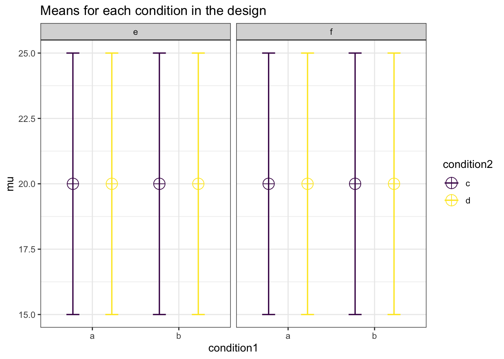

Chapter 9 Error Control in Exploratory ANOVA
In a 2 x 2 x 2 design, an ANOVA will give the test results for three main effects, three two-way interactions, and one three-way interaction. That’s 7 statistical tests. The probability of making at least one type I error in a single 2 x 2 x 2 ANOVA is \(1-(0.95)^7 = 30\)%.
string <- "2b*2b*2b"
n <- 50
mu <- c(20, 20, 20, 20, 20, 20, 20, 20)
# All means are equal - so there is no real difference.
# Enter means in the order that matches the labels below.
sd <- 5
p_adjust = "none"
# "none" means we do not correct for multiple comparisons
labelnames <- c("condition1", "a", "b",
"condition2", "c", "d",
"condition3", "e", "f") #
# The label names should be in the order of the means specified above.
design_result <- ANOVA_design(design = string,
n = n,
mu = mu,
sd = sd,
labelnames = labelnames)
alpha_level <- 0.05
#We set the alpha level at 0.05. simulation_result <- ANOVA_power(design_result,
alpha_level = alpha_level,
verbose = FALSE)| power | effect_size | |
|---|---|---|
| anova_condition1 | 4.6 | 0.0024976 |
| anova_condition2 | 3.7 | 0.0023969 |
| anova_condition3 | 5.5 | 0.0026112 |
| anova_condition1:condition2 | 4.4 | 0.0025654 |
| anova_condition1:condition3 | 5.3 | 0.0026206 |
| anova_condition2:condition3 | 4.6 | 0.0024337 |
| anova_condition1:condition2:condition3 | 5.5 | 0.0026119 |
When there is no true effect, we formally do not have ‘power’ (which is defined as the probability of finding p < \(\alpha\) if there is a true effect to be found) so the power column should be read as the ‘type I error rate.’ Because we have saved the power simulation in the ‘simulation_result’ object, we can perform calculations on the ‘sim_data’ dataframe that is stored. This dataframe contains the results for the nsims simulations (e.g., 10000 rows if you ran 10000 simulations) and stores the p-values and effect size estimates for each ANOVA. The first 7 columns are the p-values for the ANOVA, first the main effects of condition 1, 2, and 3, then three two-way interactions, and finally the threeway interaction.
We can calculate the number of significant results for each test (which should be 5%) by counting the number of significant p-values in each of the 7 rows:
apply(as.matrix(simulation_result_8.1$sim_data[(1:7)]), 2,
function(x) round(mean(ifelse(x < alpha_level, 1, 0)),4))## anova_condition1 anova_condition2
## 0.046 0.037
## anova_condition3 anova_condition1:condition2
## 0.055 0.044
## anova_condition1:condition3 anova_condition2:condition3
## 0.053 0.046
## anova_condition1:condition2:condition3
## 0.055This is the type I error rate for each test. The familywise error rate referrs to the probability of one or more of the tests in the ANOVA being significant, even though none of the 7 effects exist (3 main effects, 3 two-way interactions, and 1 three-way interaction).
To calculate this error rate we do not just add the 7 error rates (so 7 * 5% - 35%). Instead, we calculate the probability that there will be at least one significant result in an ANOVA we perform. Some ANOVA results will have multiple significant results, just due to the type I error rate (e.g., a significant result for the three-way interaction, and for the main effect of condition 1) but such an ANOVA is counted only once. If we calculate this percentage from our simulations, we see the number is indeed very close to \(1-(0.95)^7 = 30%\).
sum(apply(as.matrix(simulation_result_8.1$sim_data[(1:7)]), 1,
function(x)
round(mean(ifelse(x < alpha_level, 1, 0)),4)) > 0) / nsims## [1] 0.0275But what we should do about this alpha inflation? We do not want to perform exploratory ANOVAs and observe more type I errors than expected, because these significant effects will often not replicate if you try to build on them. Therefore, you need to control the type I error rate.
In the simulation code, which relies on the afex package, there is the option to set p_adjust. In the simulation above, p_adjust was set to "none". This means no adjustment is made to alpha level for each test (above this was 0.05).
Afex relies on the p.adjust functon in the stats package in base R (more information is available here). From the package details:
The adjustment methods include the Bonferroni correction (“bonferroni”) in which the p-values are multiplied by the number of comparisons. Less conservative corrections are also included by Holm (1979) (“holm”), Hochberg (1988) (“hochberg”), Hommel (1988) (“hommel”), Benjamini & Hochberg (1995) (“BH” or its alias “fdr”), and Benjamini & Yekutieli (2001) (“BY”), respectively. A pass-through option (“none”) is also included. The first four methods are designed to give strong control of the family-wise error rate. There seems no reason to use the unmodified Bonferroni correction because it is dominated by Holm’s method, which is also valid under arbitrary assumptions.
Hochberg’s and Hommel’s methods are valid when the hypothesis tests are independent or when they are non-negatively associated (Sarkar, 1998; Sarkar and Chang, 1997). Hommel’s method is more powerful than Hochberg’s, but the difference is usually small and the Hochberg p-values are faster to compute.
The “BH” (aka “fdr”) and “BY” method of Benjamini, Hochberg, and Yekutieli control the false discovery rate, the expected proportion of false discoveries amongst the rejected hypotheses. The false discovery rate is a less stringent condition than the family-wise error rate, so these methods are more powerful than the others.
Let’s re-run the simulation with the Holm-Bonferroni correction, which is simple and require no assumptions.
string <- "2b*2b*2b"
n <- 50
mu <- c(20, 20, 20, 20, 20, 20, 20, 20)
#All means are equal - so there is no real difference.
# Enter means in the order that matches the labels below.
sd <- 5
p_adjust = "holm"
# Changed to Holm-Bonferroni
labelnames <- c("condition1", "a", "b",
"condition2", "c", "d",
"condition3", "e", "f") #
# the label names should be in the order of the means specified above.
design_result <- ANOVA_design(design = string,
n = n,
mu = mu,
sd = sd,
labelnames = labelnames)
alpha_level <- 0.05simulation_result <- ANOVA_power(design_result,
alpha_level = alpha_level,
p_adjust = p_adjust,
verbose = FALSE)| power | effect_size | |
|---|---|---|
| anova_condition1 | 1.3 | 0.0027223 |
| anova_condition2 | 1.2 | 0.0027230 |
| anova_condition3 | 0.5 | 0.0024579 |
| anova_condition1:condition2 | 0.9 | 0.0026822 |
| anova_condition1:condition3 | 1.0 | 0.0027651 |
| anova_condition2:condition3 | 0.7 | 0.0023383 |
| anova_condition1:condition2:condition3 | 0.6 | 0.0024676 |
| power | effect_size | |
|---|---|---|
| p_condition1_a_condition2_c_condition3_e_condition1_a_condition2_c_condition3_f | 0.0 | 0.0032320 |
| p_condition1_a_condition2_c_condition3_e_condition1_a_condition2_d_condition3_e | 0.1 | 0.0058348 |
| p_condition1_a_condition2_c_condition3_e_condition1_a_condition2_d_condition3_f | 0.1 | -0.0023320 |
| p_condition1_a_condition2_c_condition3_e_condition1_b_condition2_c_condition3_e | 0.6 | 0.0004534 |
| p_condition1_a_condition2_c_condition3_e_condition1_b_condition2_c_condition3_f | 0.0 | -0.0076772 |
| p_condition1_a_condition2_c_condition3_e_condition1_b_condition2_d_condition3_e | 0.2 | -0.0059961 |
| p_condition1_a_condition2_c_condition3_e_condition1_b_condition2_d_condition3_f | 0.1 | -0.0030720 |
| p_condition1_a_condition2_c_condition3_f_condition1_a_condition2_d_condition3_e | 0.1 | 0.0027693 |
| p_condition1_a_condition2_c_condition3_f_condition1_a_condition2_d_condition3_f | 0.2 | -0.0064465 |
| p_condition1_a_condition2_c_condition3_f_condition1_b_condition2_c_condition3_e | 0.2 | -0.0018622 |
| p_condition1_a_condition2_c_condition3_f_condition1_b_condition2_c_condition3_f | 0.2 | -0.0109505 |
| p_condition1_a_condition2_c_condition3_f_condition1_b_condition2_d_condition3_e | 0.2 | -0.0090944 |
| p_condition1_a_condition2_c_condition3_f_condition1_b_condition2_d_condition3_f | 0.2 | -0.0056982 |
| p_condition1_a_condition2_d_condition3_e_condition1_a_condition2_d_condition3_f | 0.1 | -0.0087148 |
| p_condition1_a_condition2_d_condition3_e_condition1_b_condition2_c_condition3_e | 0.3 | -0.0054679 |
| p_condition1_a_condition2_d_condition3_e_condition1_b_condition2_c_condition3_f | 0.2 | -0.0142423 |
| p_condition1_a_condition2_d_condition3_e_condition1_b_condition2_d_condition3_e | 0.0 | -0.0117915 |
| p_condition1_a_condition2_d_condition3_e_condition1_b_condition2_d_condition3_f | 0.1 | -0.0086903 |
| p_condition1_a_condition2_d_condition3_f_condition1_b_condition2_c_condition3_e | 0.0 | 0.0040219 |
| p_condition1_a_condition2_d_condition3_f_condition1_b_condition2_c_condition3_f | 0.0 | -0.0057633 |
| p_condition1_a_condition2_d_condition3_f_condition1_b_condition2_d_condition3_e | 0.0 | -0.0038066 |
| p_condition1_a_condition2_d_condition3_f_condition1_b_condition2_d_condition3_f | 0.0 | -0.0002288 |
| p_condition1_b_condition2_c_condition3_e_condition1_b_condition2_c_condition3_f | 0.2 | -0.0089253 |
| p_condition1_b_condition2_c_condition3_e_condition1_b_condition2_d_condition3_e | 0.1 | -0.0073455 |
| p_condition1_b_condition2_c_condition3_e_condition1_b_condition2_d_condition3_f | 0.3 | -0.0041422 |
| p_condition1_b_condition2_c_condition3_f_condition1_b_condition2_d_condition3_e | 0.0 | 0.0022022 |
| p_condition1_b_condition2_c_condition3_f_condition1_b_condition2_d_condition3_f | 0.0 | 0.0053279 |
| p_condition1_b_condition2_d_condition3_e_condition1_b_condition2_d_condition3_f | 0.2 | 0.0029956 |
sum(apply(as.matrix(simulation_result_8.2$sim_data[(1:7)]), 1,
function(x)
round(mean(ifelse(x < alpha_level, 1, 0) * 100),4)) > 0) / nsims## [1] 0.0061We see it is close to 5%. Note that error rates have variation, and even in a ten thousand simulations, the error rate in the sample of studies can easily be half a percentage point higher or lower (see this blog. But in the long run the error rate should equal the alpha level. Furthermore, note that the Holm-Bonferroni method is slightly more powerful than the Bonferroni procedure (which is simply \(\alpha\) divided by the number of tests). There are more powerful procedures to control the type I error rate, which require making more assumptions. For a small number of tests, they Holm-Bonferroni procedure works well. Alternative procedures to control error rates can be found in the multcomp R package (Hothorn, Bretz, and Westfall 2020).